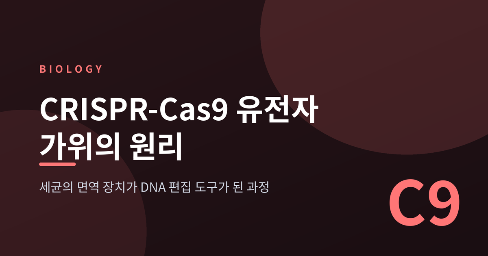
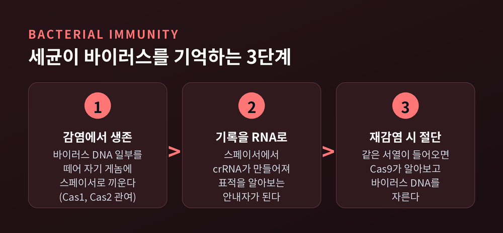
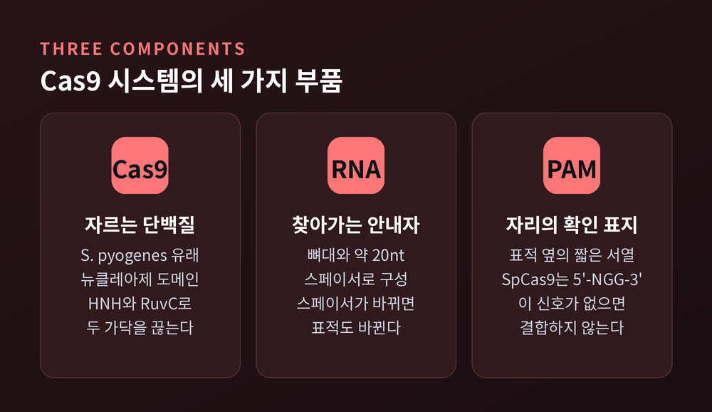
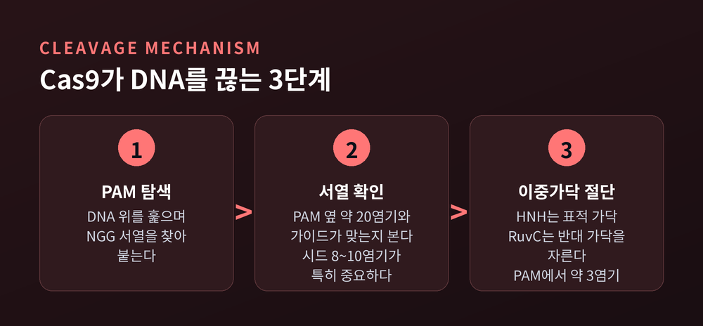
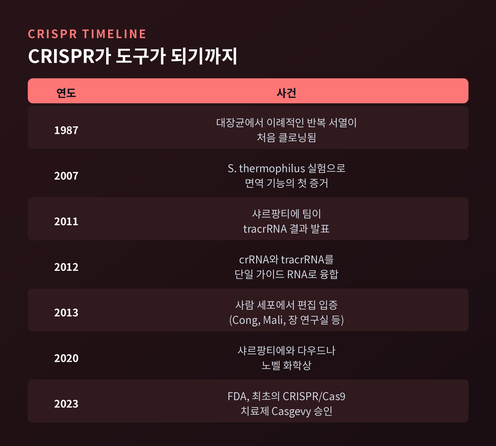
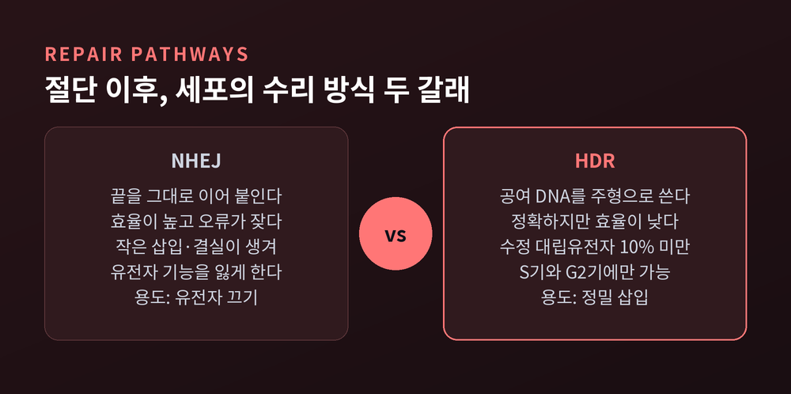

CRISPR-Cas9 유전자 가위의 원리, 세균 면역이 DNA 편집 도구가 된 과정

오늘은 CRISPR-Cas9 유전자 가위가 어떻게 DNA의 원하는 자리를 찾아 자르는지 이야기해 보려 합니다. 세균이 바이러스를 막으려고 갖춘 장치가 어떻게 편집 도구로 바뀌었는지를 따라가 보는 글입니다.
먼저 결론을 세 줄로 적습니다.
첫째, CRISPR는 세균이 바이러스의 DNA 조각을 보관해 두었다가 다음 감염 때 알아보고 자르는 면역 장치입니다.
둘째, Cas9는 가이드 RNA가 알려 준 20염기 서열을 찾아 DNA 이중가닥을 끊는 단백질입니다.
셋째, 자르는 일은 Cas9가 하지만 고쳐 쓰는 일은 세포의 수리 시스템이 합니다. 그 조합이 2023년 최초의 승인 치료제로 이어졌습니다.
세균은 바이러스의 기록을 DNA에 남긴다
CRISPR 배열에는 반복되는 서열과, 그 사이에 끼어 있는 고유한 서열이 번갈아 나타납니다. 이 고유한 서열을 스페이서라 부릅니다. 스페이서는 세균을 공격했던 바이러스의 유전 암호와 일치합니다.
세균이 감염에서 살아남으면 바이러스 DNA의 일부를 떼어 자기 게놈에 끼워 넣습니다. 감염 기록을 남기는 셈입니다. Cas1과 Cas2라는 단백질이 이 포획과 삽입에 관여하고, 새 스페이서는 대체로 배열의 한쪽 끝에 붙습니다. 그래서 CRISPR 배열은 감염의 시간순 기록부와 같습니다. 바이러스 DNA 가운데 어느 조각을 고를지도 정해져 있습니다. 짧은 PAM 모티프 바로 옆 서열이 선택됩니다. 이 PAM은 뒤에서 다시 등장합니다.
이 기록이 정말 면역으로 작동하는지는 2007년 실험으로 확인되었습니다. 요구르트와 치즈를 만드는 데 쓰는 Streptococcus thermophilus가 대상이었습니다. 이어진 연구에서 파지를 반복해서 공격한 뒤 얻은 내성 균주 30개를 분석했더니, 새 스페이서 39개가 확인되었습니다. 그중 37개는 파지의 서열과 100% 일치했습니다. 내성 균주는 파지가 달라붙는 것을 막지 않았습니다. 흡착률은 약 90%로 그대로였습니다. 대신 감염된 세포 하나에서 만들어지는 파지의 수가 190개에서 6~28개로 줄었습니다. 겉문을 잠근 것이 아니라 안으로 들어온 침입자를 알아보고 처리한 것입니다.

세 가지 부품: Cas9, 가이드 RNA, PAM
세균의 CRISPR 시스템에는 여러 종류가 있습니다. 어떤 것은 여러 Cas 단백질이 함께 일해야 합니다. 반면 Streptococcus pyogenes의 시스템은 Cas9 하나만 있으면 바이러스 DNA를 자릅니다. 구조가 단순해서 도구로 가져다 쓰기에 알맞았습니다.
Cas9가 일하려면 RNA가 두 가지 필요합니다. 하나는 스페이서에서 만들어지는 crRNA로, 표적 DNA를 알아보는 역할을 맡습니다. 다른 하나는 tracrRNA입니다. 에마뉘엘 샤르팡티에 연구팀이 2011년에 밝힌 것으로, crRNA가 성숙한 활성형이 되려면 이것이 필요합니다. 반복 서열의 일부와 짝을 이루어 이중가닥 RNA를 만들고, 효소 RNase III가 이를 잘라 성숙한 crRNA로 바꿉니다.
PAM은 Cas9가 표적 옆에서 확인하는 짧은 서열입니다. S. pyogenes의 Cas9는 5'-NGG-3'를 요구합니다. N은 아무 염기나 올 수 있다는 뜻입니다. 이 서열이 결합의 신호가 됩니다. 달리 보면 Cas9는 자를 수 있는 자리에 제약이 있다는 말입니다. NGG가 곁에 없는 서열은 기본형 Cas9로는 겨냥하기 어렵습니다. 이웃 효소인 Cas12a는 T가 많은 TTTV를 PAM으로 씁니다.

찾고, 풀고, 자른다: Cas9가 DNA를 끊는 순서
가이드 RNA에는 Cas9가 붙는 뼈대 부분과, 약 20염기짜리 스페이서 부분이 있습니다. 뒤쪽이 표적을 정합니다. Cas9는 가이드 RNA와 결합하면 DNA를 붙잡을 수 있는 활성 형태로 바뀝니다.
그다음은 탐색입니다. Cas9는 DNA 위를 훑으며 먼저 PAM을 찾고, PAM이 있으면 그 옆 서열이 가이드 RNA와 맞는지 확인합니다. 모든 20염기를 한꺼번에 비교하지는 않습니다. PAM에 가까운 8~10염기가 특히 중요해서, 이 구간을 시드 영역이라 부릅니다. 시드 영역에 어긋남이 있으면 절단이 억제됩니다. 반대로 PAM에서 먼 쪽의 불일치는 절단을 허용하는 경우가 많습니다. 이 점이 의도하지 않은 자리가 잘리는 오프타깃의 배경입니다.
서열이 맞으면 Cas9의 뉴클레아제 도메인 두 개가 움직입니다. HNH는 가이드와 짝을 이룬 표적 가닥을, RuvC는 반대편 가닥을 자릅니다. 두 가닥이 모두 끊겨 이중가닥 절단이 생깁니다. 절단 자리는 PAM에서 3염기 안팎 떨어진 곳입니다. 소스마다 방향을 달리 표기하지만 같은 위치를 가리킵니다.
여기서 흥미로운 사실이 하나 있습니다. Cas9는 자른 뒤에도 DNA에서 잘 떨어지지 않습니다. 절단은 매우 빠르지만 산물을 놓는 데는 수십 시간이 걸린다고 보고되어, 사실상 한 번 쓰고 마는 효소로 취급됩니다.

2012년, 두 개의 RNA를 하나로 묶다
예전엔 이 시스템이 세균 안에서만 쓰이는 장치였습니다. 이를 프로그래밍 가능한 도구로 바꾼 것이 2012년의 연구입니다. 샤르팡티에와 제니퍼 다우드나 연구팀은 시험관 안에서 Cas9와 RNA의 관계를 밝혔습니다. Cas9만으로는 시험용 DNA가 잘리지 않았고, tracrRNA를 더하자 DNA가 두 조각으로 잘렸습니다. CRISPR 부분을 원하는 서열에 맞게 바꾸면 절단 위치도 따라 바뀌었습니다. 다우드나 연구실의 한 유전자에서는 다섯 곳의 표적이 의도한 자리에서 잘렸습니다.
이어서 crRNA와 tracrRNA를 하나의 분자로 이은 단일 가이드 RNA가 만들어졌습니다. 부품이 둘에서 하나로 줄어든 것입니다. 이제 편집하려는 자리에 맞춰 약 20염기만 바꿔 쓰면 됩니다. 단백질을 새로 설계하던 이전의 유전자 가위와 비교하면, 표적을 바꾸는 일이 RNA 서열 하나를 고치는 일로 단순해진 것입니다.
2013년 1월에는 브로드 연구소의 장 연구실이 쥐와 사람 세포에서 쓸 수 있는 방법을 처음 발표했고, 다른 그룹들도 사람 세포 배양에서 편집을 입증했습니다. 2020년 노벨 화학상은 샤르팡티에와 다우드나에게 돌아갔습니다. 수상 이유는 유전체 편집 방법의 개발이었습니다.

자르는 것은 Cas9, 고쳐 쓰는 것은 세포
Cas9는 DNA를 끊을 뿐입니다. 서열을 바꾸는 일은 끊어진 자리를 메우는 세포의 수리 시스템이 합니다. 이 점을 이해하면 편집의 결과가 왜 두 갈래로 나뉘는지 보입니다.
첫 번째는 비상동 말단 연결(NHEJ)입니다. 효율이 높은 대신 오류가 잦습니다. 끊어진 양쪽 끝을 그대로 이어 붙이다 보니 염기가 조금 끼거나 빠지는 작은 삽입·결실이 흔히 생깁니다. 이것이 유전자 읽는 틀을 어긋나게 해 그 유전자의 기능을 잃게 만듭니다. 특정 유전자를 꺼 버리고 싶을 때 쓰는 경로입니다.
두 번째는 상동 재조합 수리(HDR)입니다. 공여 DNA를 주형으로 복사해 끊어진 자리를 메웁니다. 정확하지만 효율이 낮아, 수정된 대립유전자의 10%에 못 미친다고 정리됩니다. 세포 주기의 S기와 G2기에만 일어난다는 제약도 있습니다. 원하는 서열을 정밀하게 끼워 넣을 때 쓰는 길입니다.
한 가지 변형을 더 소개합니다. Cas9의 두 도메인 가운데 하나를 망가뜨리면 한 가닥만 자르는 nickase가 됩니다. 두 도메인을 모두 망가뜨린 dCas9는 DNA를 자르지 못하지만 표적에는 붙습니다. 이를 이용해 자르지 않고 유전자의 발현을 켜는 연구도 이루어집니다. 염기 편집은 아예 이중가닥 절단 없이 한 염기만 바꾸는 방식이며, 소스에 따라 효율이 90%를 넘는다고 정리됩니다.

첫 임상 결실: Casgevy와 아직 남은 질문
2023년 12월 8일, 미국 FDA는 Casgevy를 승인했습니다. CRISPR/Cas9을 쓴 최초의 승인 치료제입니다. 대상은 재발성 혈관폐쇄 위기를 겪는 12세 이상의 겸상적혈구병 환자입니다.
치료 방식은 이렇습니다. 환자 본인의 조혈모세포를 채취해 Cas9으로 편집합니다. 환자는 골수를 비우는 고용량 항암 전처치를 받고, 편집된 세포를 한 번에 주입받습니다. 세포가 골수에 자리 잡으면 태아 헤모글로빈 생산이 늘어나, 적혈구가 낫 모양으로 변하는 일이 줄어듭니다.
임상시험에서는 44명이 치료를 받았고, 그중 추적 기간이 충분한 31명을 평가했습니다. 이 가운데 29명, 93.5%가 24개월 추적 기간 중 최소 12개월 연속으로 심한 혈관폐쇄 위기를 겪지 않았습니다. 투여받은 전원이 생착했고 이식 실패나 거부는 없었습니다. 영국에서는 2023년 11월, 유럽연합에서는 2024년 2월에 조건부 승인이 이어졌습니다.
다만 아쉬운 점도 분명합니다. 치료 전에 고용량 항암 처치가 필요하고, 부작용으로 혈소판·백혈구 감소와 구내염 등이 보고됩니다. 미국 정가는 220만 달러입니다. 기술적으로도 활성 뉴클레아제가 의도하지 않은 자리를 자르는 오프타깃은 여전히 정밀도 연구의 핵심 과제입니다. 2018년 허젠쿠이가 인간 배아를 편집해 쌍둥이 출생을 발표했을 때는 윤리적으로 위험하고 시기상조라는 비판이 쏟아졌습니다. 생식세포의 편집은 다음 세대로 이어지기 때문에 지금도 신중하게 다루어집니다.
정리하면 이렇습니다. CRISPR-Cas9은 새로 발명된 기계라기보다, 오래전부터 세균이 쓰던 면역 장치를 읽는 법을 배워 빌려 온 것에 가깝습니다. 바이러스의 기록을 보관하고, 가이드로 표적을 알아보고, 필요한 자리만 자르는 원리를 사람이 다른 서열에 맞게 바꿔 쓴 것입니다.
"찾는 것은 RNA, 자르는 것은 단백질, 고치는 것은 세포."
이 세 줄을 기억하신다면, 앞으로 나올 유전자 편집 소식의 절반은 어디서 막히고 어디서 풀리는지 짐작하실 수 있을 것입니다. 이 기술을 그저 만능 가위로만 보시겠냐고 물으신다면, 그렇지 않다고 답하겠습니다. 자르는 순간보다 그 뒤의 수리와 책임이 더 무겁기 때문입니다.